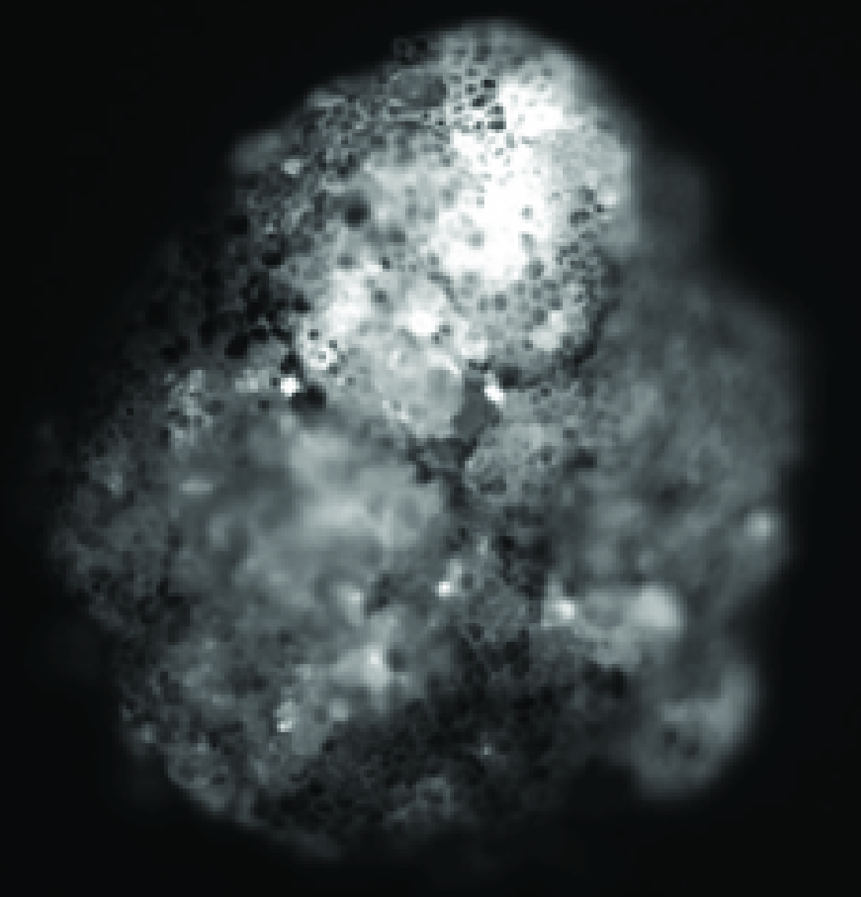

Biology is the oldest manufacturing platform there is — and it is becoming programmable. Computationally designed organisms — living systems designed not by evolution, and not by hand, but by AI — are its leading edge. WCDO26 convenes the people who will define this new category, drawn from the fields that rarely share a table: biology, AI, industry, and philosophy.
WCDO26 is the virtual follow-on to CDO2025, the first Abele Workshop, held in person at the University of Vermont in July 2025 with 33 invited leaders from academia, industry, and government. In the lineage of field-defining convenings like the 1956 Dartmouth conference on artificial intelligence, the workshop exists to help a new field build itself — and to chart the in-person WCDO27.
Xenobots and biobots are the first instances of AI-designed life — and the beginning of programmable biology as a field.
The science, the tools, the capital, and the philosophy advance on separate tracks. For one afternoon, they advance together.
Mike Levin and Josh Bongard report the state of the art — the founders showing their work, not a panel speculating.
WCDO26 sets the agenda and the guest list for the in-person WCDO27, in the lineage of Dartmouth 1956.
A progress briefing on xenobots and biobots from Levin & Bongard — current results, told first-hand.
A live, collective design of simulated organisms — the whole room at the canvas, built from the lab's real experiments.
A working session writing the collective document that shapes next year's two-day, in-person workshop.
A living system whose form is designed by AI rather than by evolution or by hand. Xenobots — sub-millimeter constructs built from a frog's own cells — were the first examples, reported in 2020–2021 by Blackiston, Kriegman, Levin, and Bongard.
It is a by-invitation convening of biologists, AI researchers, industry leaders, and philosophers shaping this emerging field. Invitations build on the CDO2025 cohort.
Participants collectively design simulated organisms in real time — a virtual translation of the in-person hands-on lab, grounded in the real experiments the labs have run.
WCDO26 is held over Zoom. The Zoom link will be sent to confirmed participants closer to the event date.
These are sub-millimeter constructs built from a frog's own cells and studied in controlled lab settings. They are biodegradable, last only days to weeks, and cannot persist or propagate outside the lab. The research community treats safety and ethics as first-order questions — which is why WCDO26 brings philosophers and ethicists into the room alongside the scientists.
WCDO26 is virtual and half a day; its closing hour writes the plan and guest list for WCDO27, the two-day in-person workshop in 2027.
CDO2025 — the first workshop Xenobots (Wikipedia)
For questions about WCDO26, contact Josh Bongard — josh.bongard@uvm.edu.